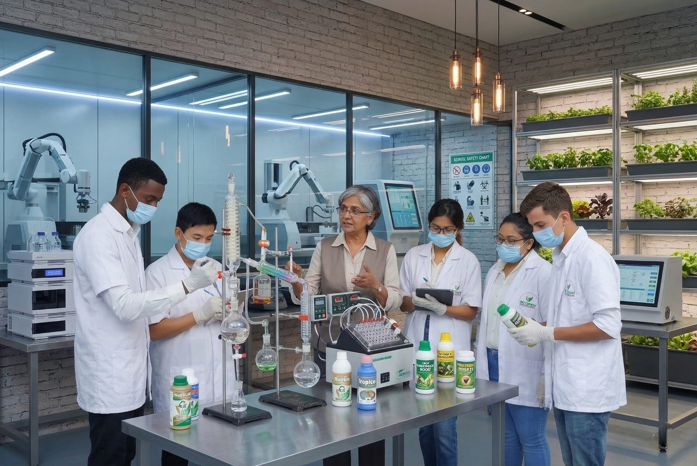
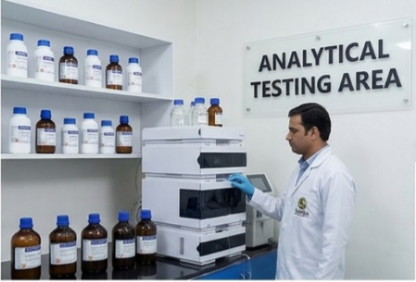
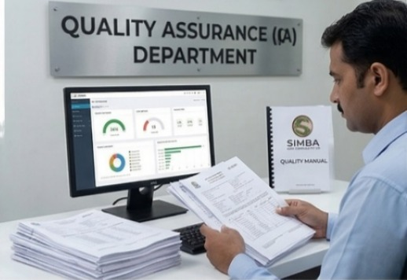
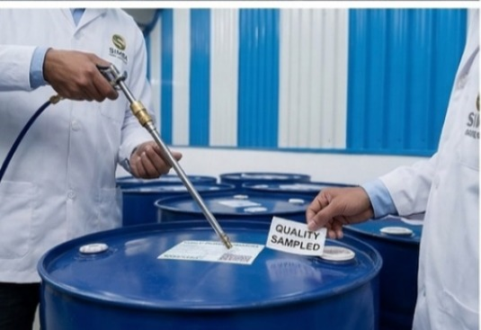
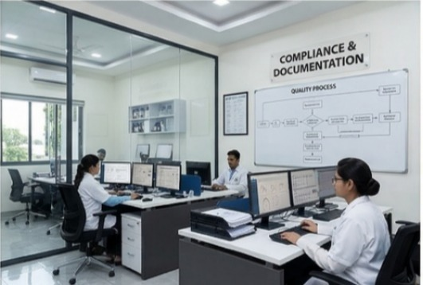
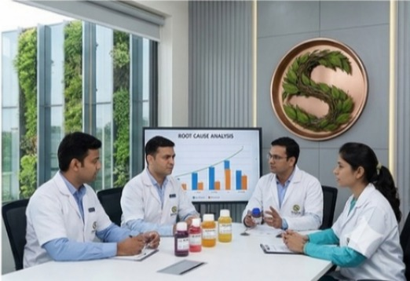

Stage-Wise Checks
Quality controllers are described as carrying out checks at different stages of the production process.
Quality Department
The quality department is positioned around controlled supervision, stage-wise checks, product evaluation, and a research-oriented mindset that supports better consistency and stronger crop-care reliability.

Quality Focus
The source material highlights a strong quality-first approach, with supervision across manufacturing stages and product checks intended to support dependable field performance.
Quality controllers are described as carrying out checks at different stages of the production process.
Products are reviewed against practical quality parameters such as purity, effectiveness, shelf life, and user suitability.
The quality philosophy emphasizes improving standards over time rather than treating quality as a static checkpoint.
The quality story is tied closely to experienced professionals supervising the product journey and evaluation process.
R&D
The referenced material describes an R&D facility intended to handle in-house testing and research support, backed by scientists, technicians, and agronomy-oriented expertise.
A research-oriented facility adds value by strengthening innovation, testing confidence, and long-term product development capability.
R&D Gallery





